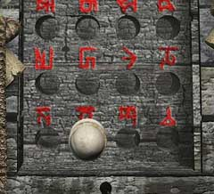

| 概要 | 地図 |
| 淡いヒント集 | ヒント集 | 的確なヒント集 |
| 攻略最短ルート |
| 場所選択に戻る |
シベリア
 スピーカーの下にある箱を調べる 鍵穴に対し「象牙の鍵」を使う  「象牙の鍵」を取り外し、画像の位置に鍵をはめる スピーカーのハンドルを回す スピーカーの管を調べる たて向きのレバーを使い、上の画像のようにする (上：全開、半開き、全開) (下：半開き、閉じる、全開) 横向きのレバーを引く | << 前へ | |
| 場所選択に戻る |
| 概要 | 地図 |
| 淡いヒント集 | ヒント集 | 的確なヒント集 |
| 攻略最短ルート |
Syberia II
| 目次へ戻る | ページの上部へ |